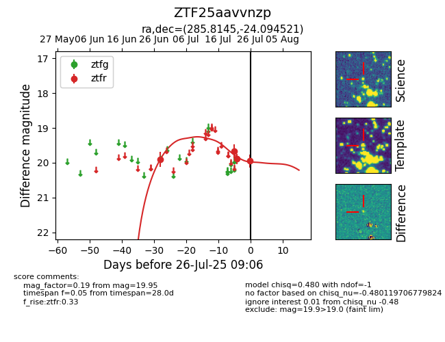

Target ZTF25aavvnzp at 2025-07-26 09:06, see:
FINK: fink-portal.org/ZTF25aavvnzp
Lasair: lasair-ztf.lsst.ac.uk/objects/ZTF25aavvnzp
ALeRCE: alerce.online/object/ZTF25aavvnzp
alt names
ZTF25aavvnzp (ztf,fink)
coordinates:
equatorial (ra, dec) = (285.8145,-24.09452)
galactic (l, b) = (12.3759,-13.18144)
photometry
last ztfr=19.95
4 ztfr detections
